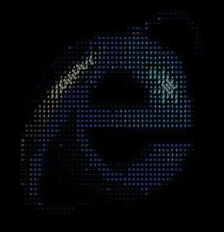

quscii
First things first, check out the project: here
This blog is an explanation/guide to the same, I will not spend a lot of time on the truistic parts of qubits, and quantum computing. However, if this is your first time hearing those terms, it is probably a good idea watch the great video by 3b1b here or if you’re feeling too adventurous you can refer to something that I wrote while explaining myself (it might not be that accurate though and if you have some more time refer to the 3b1b video).
Just as fun facts, I will mention some differences in the classical approaches vs. the quantum approach here:
- The usual ascii generators map the pixel values directly from the 1-d space, giving the same output for each pixel every time, while when the characters are mapped here from the Hilbert Space of dimensions 2^n -> n = number of qubits, on every run, they are different, giving it a unique form.
- The complexity of classical versions is O(n), whereas for the quantum ones, it is O(2^n), for this project, we will be working only with 2 qubits, making it feasible for outputs.
- The randomness effect scales drastically after the threshold value of around 0.4, a comparison to realise this is below, also a graph visualisation would have been better but I couldn’t find a good way to do that.
Alright, that’s a lot of throat clearing for a while, let’s jump into the implementation.
The whole project is essentially using 3 major libraries: qiskit-> for everything quantum, pillow -> for everything image related and FastAPI-> for the hosting.
DISCLAIMER 1) The site might take some time to get working- bear with me on this. 2) The regular computation time takes ~ 2-3 minutes, so have some patience, if it still does not work, try with a different image or dm me on x dot com 3) This is a fun project and by no standards is for production, be ready to get some bugs along the way.
Architecture
The architecture mainly comprises of 3 subparts: Input Processing, Encoding, and Transformation Block.
Let’s look at each part separately now and try to give a code demo for the same.
Input Processing
The different features like height, width, r, g, b values are extracted from the input image after we resize it for generality across all inputs. For all practical purposes, instead of processing the image pixel by pixel, we instead split it in into rows and columns of block sizes which helps in faster processing of images by reducing the dimensions of the input image.
Let’s consider an example image of dimensions 16x16 pixels, and we define the block size as 4, making the total number of blocks in the image 16, with each block having the dimension of 4x4. Now, instead of iterating over each pixel in the image, we will be iterating over these blocks, thus significantly improving the computation time and maintaining consistency in the output.
This is a standard process, and it helps us in our approach as instead of making 256 total different circuits every time, we can make do with only 16, hence making the whole process faster by a factor of (block_size)^2.
# loading the images
brightness_cache = {}
try:
input_image = Image.open(inp_path)
except FileNotFoundError:
print("Image not found.")
return
input_width, input_height = input_image.size
rows = input_height // block_size
cols = input_width // block_size
resized = input_image.resize((cols, rows), Image.Resampling.LANCZOS)Encoding
After the necessary classical information about the r, g, b values are fetched, we now convert and merge them into a single brightness value referred to as perceived brightness- done to increase perception for human eyes as it’s a common fact that eyes are more sensitive to colors in the order green>red>blue. I came across this article a while back on the same topic and found it pretty interesting. This also helps in smooth mapping of characters and ensuring that there aren’t any variations in the outputs- all the pixels of brightness, suppose 150, should only be mapped to a specific character like “/”. The formula for perceived brightness is:
B_perceived = 0.2126⋅R + 0.7152⋅G + 0.0722⋅B
The encoding is done by defining a quantum circuit of 2 qubits and mapping the brightness values linearly into rotation angles of the state vector. The range of values (0,255) is mapped to (0 to π/2), with 0 representing black and 255 being white.
The conversion is executed by using the rotation along the y-axis gate on both qubits 0 and 1. The value of rotation is calculated in radians by:
θ = (val / 255) ⋅ π/2
Now we are ready to manipulate these state vectors and rotate them to induce quantumness.
# getting the data pixel wise
for x in range(rows):
for y in range(cols):
r, g, b = resized.convert("RGB").getpixel((y, x))
bright = int(0.2126 * r + 0.7152 * g + 0.0722 * b)
# encoding into quantum states
num_qubits = 2
qc = QuantumCircuit(num_qubits, num_qubits)
theta = (val / 255.0) * (pi / 2)
qc.ry(theta, 0)
qc.ry(theta, 1)Transformation
The quantum effect is controlled by the magnitude; at zero it’s your normal ascii generator, subtle effects start showing after ~0.3-0.4. At any value greater than 0, we first put the qubits in superposition with the hadamard gate and eventually use the controlled rotation gate for changing the values of theta in each pixel. For nuanced effects, the angle limit that we assume is π/4 instead of π/2. This is simulated for a single shot right now, as the execution time increases rapidly with the usual 1024 shots (~1024 times increase).
After conversion, we get the counts for each state -> convert them to integers from binary and normalize them to values between 0-255, giving us the processed brightness. To preserve the originalness of the image while adding these quantum effects, LERP - Linear Interpolation is used, it smoothly blends both the values with a weighted average on the basis of magnitude value while processing. The difference between using LERP and normal averaging lies in the flexibility that LERP inherently has, unlike hard-setting a value, it dynamically varies based on the magnitudes. This is how it looks in our use case:
blended = ⌊val⋅(1−magnitude) + qbright⋅magnitude⌋
The mapping is performed on the blended brightness by fetching the specific characters for each processed pixel block from the character set.
# check for quantumness control
if magnitude > 0:
qc.h(0)
qc.cry((val / 255.0) * (pi / 4), 0, 1)
qc.measure(range(num_qubits), range(num_qubits))
simulator = Aer.get_backend('qasm_simulator')
final = transpile(qc, simulator)
result = simulator.run(final, shots=1).result()
counts = result.get_counts(qc)
if counts:
key = list(counts.keys())[0]
qval = int(key, 2) / (2**num_qubits - 1)
qbright = qval * 255
blended = int(val * (1 - magnitude) + qbright * magnitude)
brightness_cache[val] = blended
r_new = get_brightness(r)
g_new = get_brightness(g)
b_new = get_brightness(b)
fill = (r_new, g_new, b_new)
ascii_index = min(int((bright / 255) * (len(ascii_set) - 1)), len(ascii_set) - 1)
char = ascii_set[ascii_index]Output
The output canvas is initialized with the dimensions as number_charecters x charecter_dim, we select the character height and width according to the input dimensions of the font.
# redrawing back to canvas
font = ImageFont.load_default()
bbox = font.getbbox("A")
char_width = bbox[2] - bbox[0]
char_height = bbox[3] - bbox[1]
output_width = cols * char_width
output_height = rows * char_height
output = Image.new("RGB", (output_width, output_height), "black")
draw = ImageDraw.Draw(output)
draw.text((y * char_width, x * char_height), char, font=font, fill=fill)
output = output.convert('RGB')
output.save(out_path) A sample output of microsoft explorer logo
Deployment
I hate this part, it’s just so much intensive. FastAPI is the go to for deploying any python project, but the real problems came with it, scaling it for multiple users as render kept blocking concurrent requests. Initially I got into redis but had some issues, and then down the line decided to settle with the inbuilt backgroundtasks- it works fine enough and I have no intentions of investing more time into scaling something which is a fun proejct at the end of the day.
I had a lot of fun making this, learnt a lot about both the things -the ones that I thought I knew about and those that I didn’t, whenever I get back to this, would love to do this with videos though the feasibility is still questionable.
Thank you for reading this and for any feedback - dm or mail me